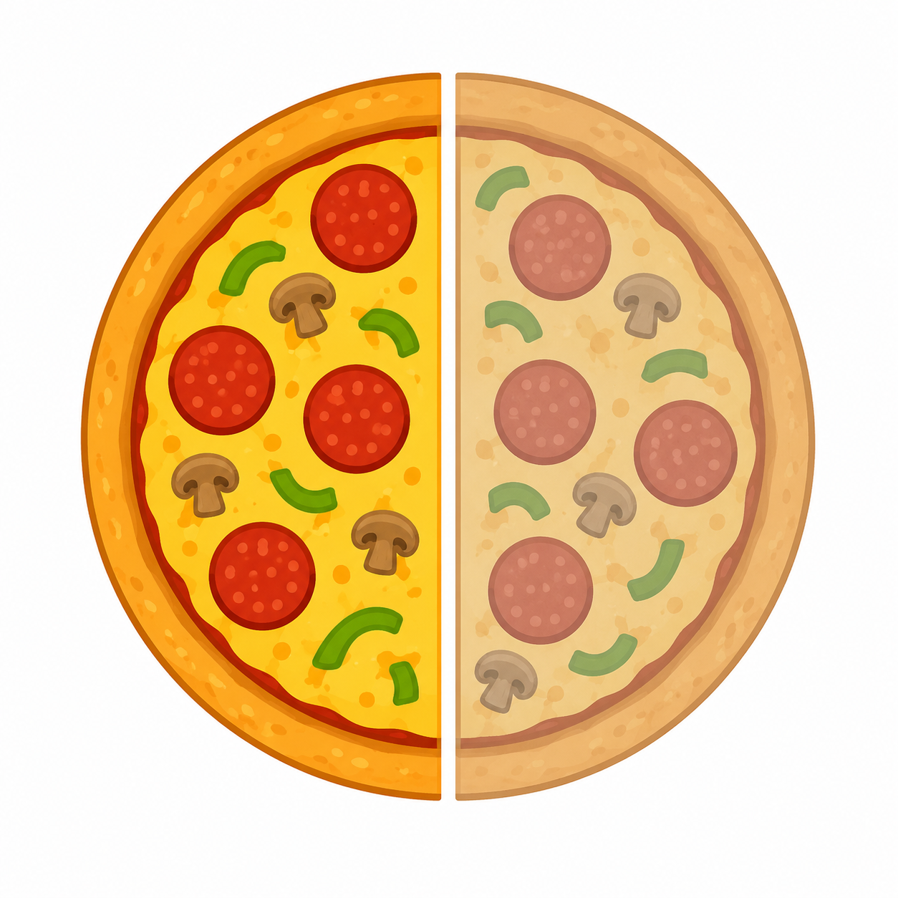
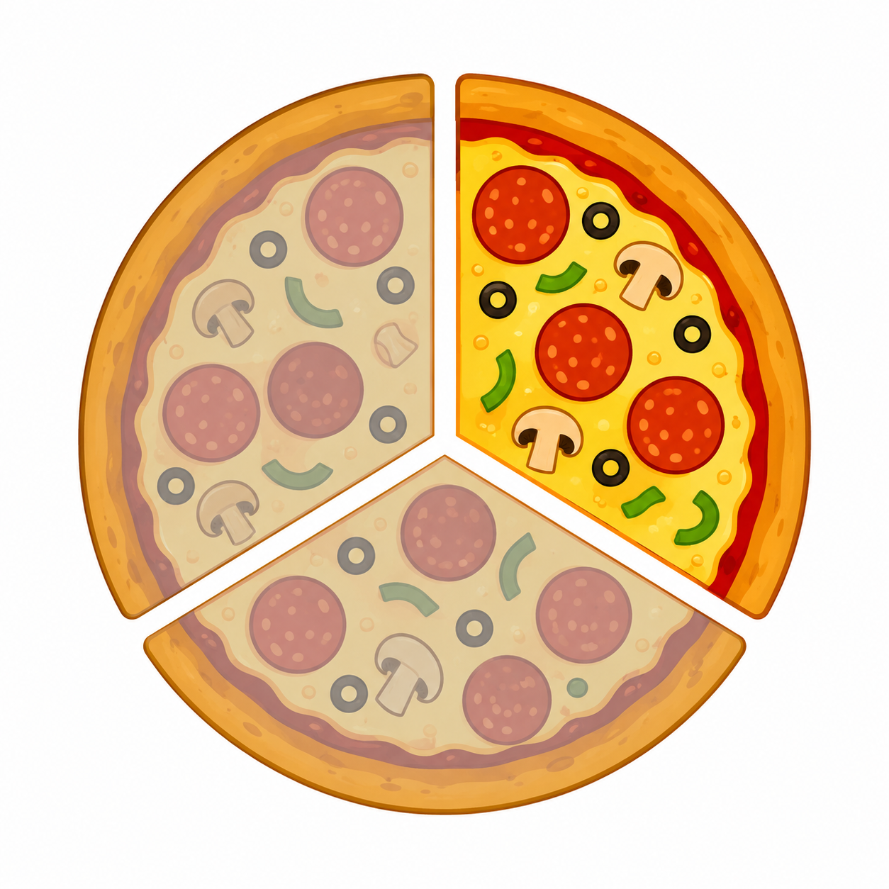
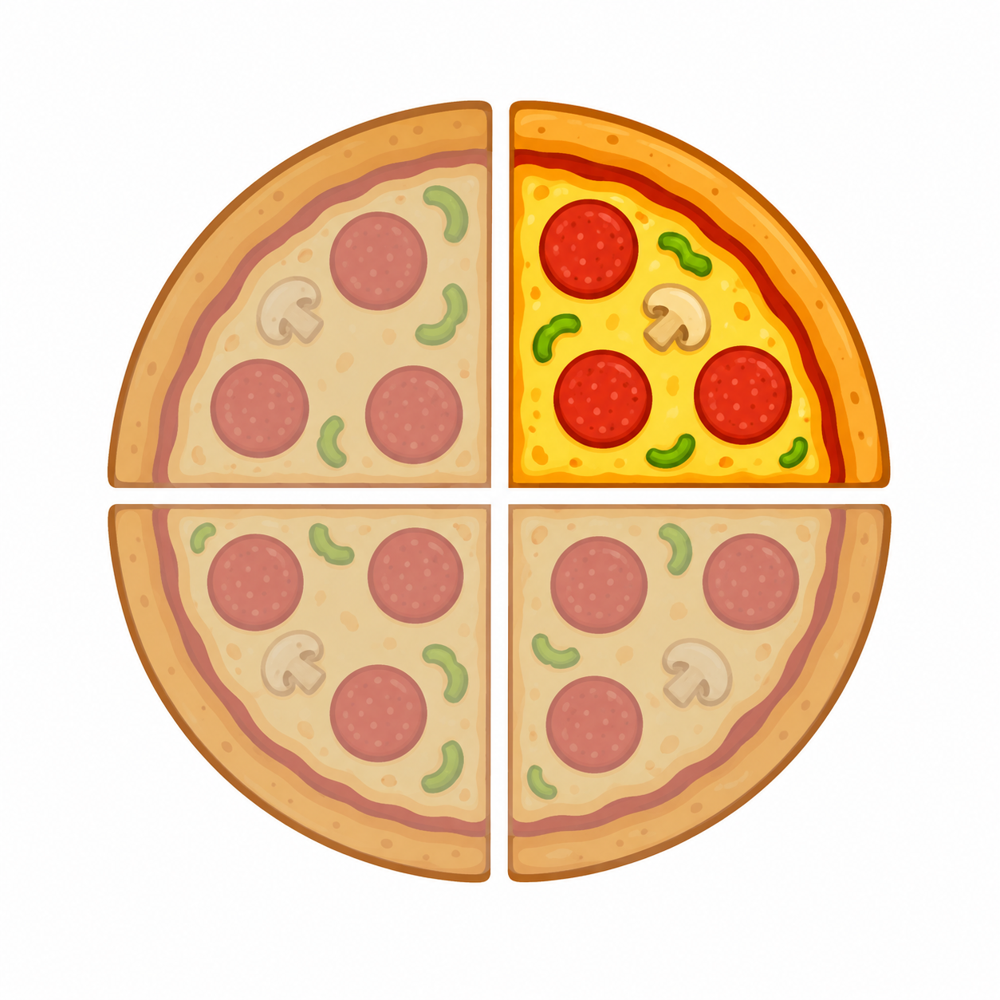
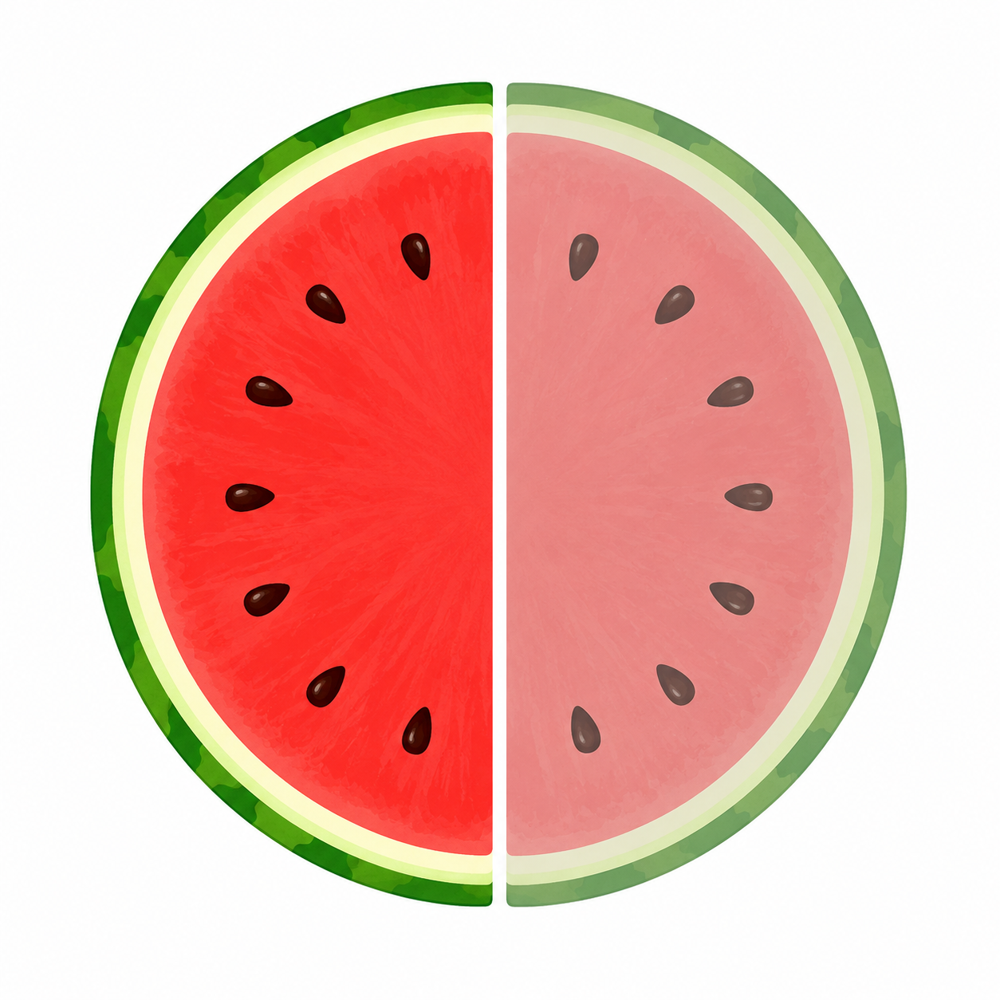
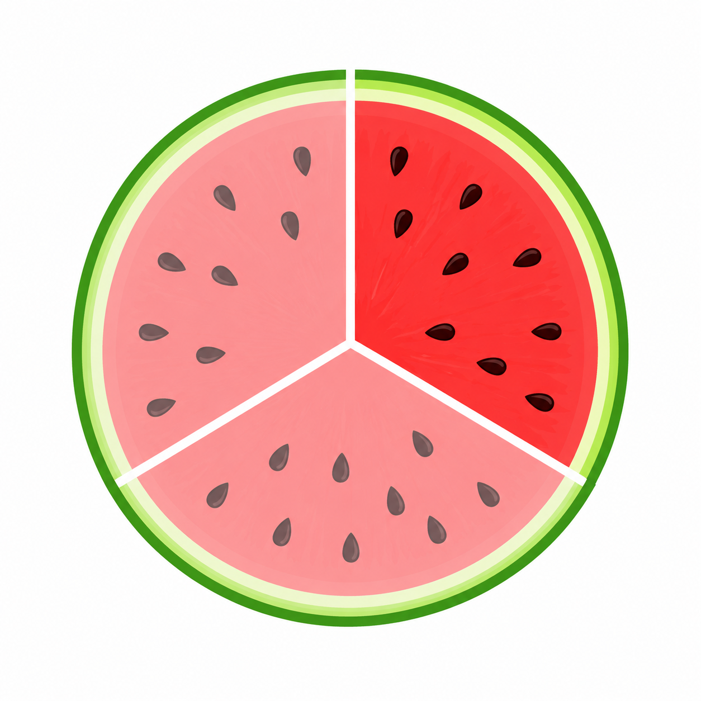
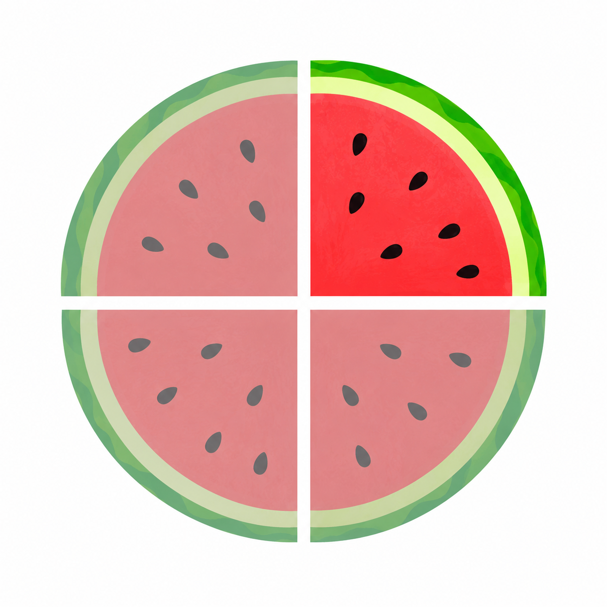

Pizza Pecahan
Lihat pizza yang dibagi sama besar. Bagian berwarna lebih terang menunjukkan satu bagian yang dipilih.



Media Pembelajaran Interaktif
Yuk belajar pecahan pembilang 1 dengan langkah bertahap: baca materi, lihat contoh soal, kerjakan latihan, lalu cek hasil akhir.
Pecahan pembilang 1 artinya satu bagian dari beberapa bagian yang sama besar. Angka di atas menunjukkan bagian yang diambil. Angka di bawah menunjukkan jumlah semua bagian.
Contoh: 1/2 berarti satu dari dua bagian, 1/3 berarti satu dari tiga bagian, dan 1/4 berarti satu dari empat bagian.
Lihat pizza yang dibagi sama besar. Bagian berwarna lebih terang menunjukkan satu bagian yang dipilih.



Semangka juga bisa dibagi sama besar. Jika diambil satu bagian, kita bisa menuliskannya dalam bentuk pecahan.



Tips mudah: Jika angka bawah makin besar, ukuran satu bagiannya menjadi makin kecil.